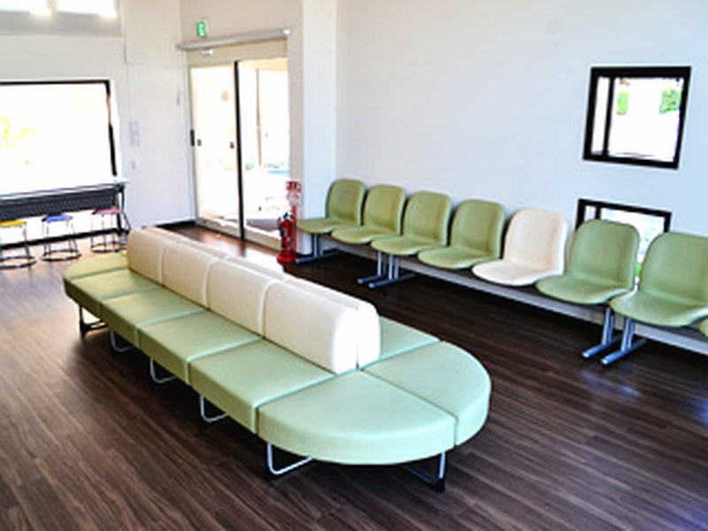

| 診療時間 | 月 | 火 | 水 | 木 | 金 | 土 | 日 |
|---|---|---|---|---|---|---|---|
| 9:00～12:00 | ○ | ○ | ○ | ○ | ○ | ○ | ／ |
| 16:00～19:00 | ○ | ○ | ／ | ○ | ○ | ／ | ／ |
休診日：水曜午後・土曜午後・日曜祝日
Clinic guide
診療時間、診療方針、院内のようすをご案内します。

Hours
受付終了時間にご注意ください
| 診療時間 | 月 | 火 | 水 | 木 | 金 | 土 | 日 |
|---|---|---|---|---|---|---|---|
| 9:00～12:00 | ○ | ○ | ○ | ○ | ○ | ○ | ／ |
| 16:00～19:00 | ○ | ○ | ／ | ○ | ○ | ／ | ／ |
休診日：水曜午後・土曜午後・日曜祝日
Policy
地域のかかりつけ医として
当院では皆様の健康全般をご支援し、末永くおつきあいいただくため、次の3つの方針を重視した診療を行います。
診療科目
予約制ではありません。初診の方は受付終了時間の30分前までにお越しください。
Facilities
写真を押すと拡大できます
制度上必要なご案内を掲載しています
医療の透明化や患者様への情報提供を積極的に推進していく観点から、領収書発行の際、個別の診療報酬の算定項目の分かる明細書を無料で発行しております。明細書には、使用した薬剤名や行われた検査名が記載されます。
厚生労働省の診療規定に伴い、「明細書発行体制等加算」（1点）を保険請求させて頂きます。この加算は医療機関の明細書発行体制を評価するもので、明細書の費用ではありません。明細書の発行を希望されない方は受付へお申し出ください。
後発医薬品のある医薬品について、特定の医薬品名を指定するのではなく、薬剤の成分をもとにした一般名処方を行う場合もあります。一般名処方によって、特定の医薬品の供給が不足した場合でも必要な医薬品を提供しやすくなります。
マイナンバーカードを使用できる体制を整え、オンライン資格確認を行っております。受診歴、薬剤情報、特定健診情報、その他必要な診療情報を取得・活用し、質の高い医療の提供に努めています。
オンライン資格確認により取得した診療情報・薬剤情報等を閲覧または活用して診療できる体制を整え、医療DXを通じた質の高い医療提供に取り組んでいます。
医療現場で働く方々の賃上げを行い、人材確保に努め、良質な医療提供を継続するための取組です。この評価料による診療費の上乗せ分は、医療現場で働く方々の賃上げに充てられます。
脂質異常症・高血圧症・糖尿病のいずれかをお持ちの方には、血圧・体重・食事・運動などに関する指導内容を記載した「療養計画書」を作成します。概ね4ヶ月に一度、生活上の課題を確認します。
患者さんの状態に応じ、28日以上の長期処方またはリフィル処方せんに対応可能です。交付の可否は病状に応じて医師が判断します。
平日18時以降の受診について、夜間早朝等加算を算定しております。3割負担の方は150円の負担となります。
院内感染対策に関する研修会を年2回実施し、感染性の高い疾患が疑われる場合は一般診療の方と動線を分けた診療スペースを確保して対応しています。
感染対策について豊田厚生病院と連携体制を構築し、定期的に必要な情報提供や助言を受け、院内感染対策の向上に努めています。